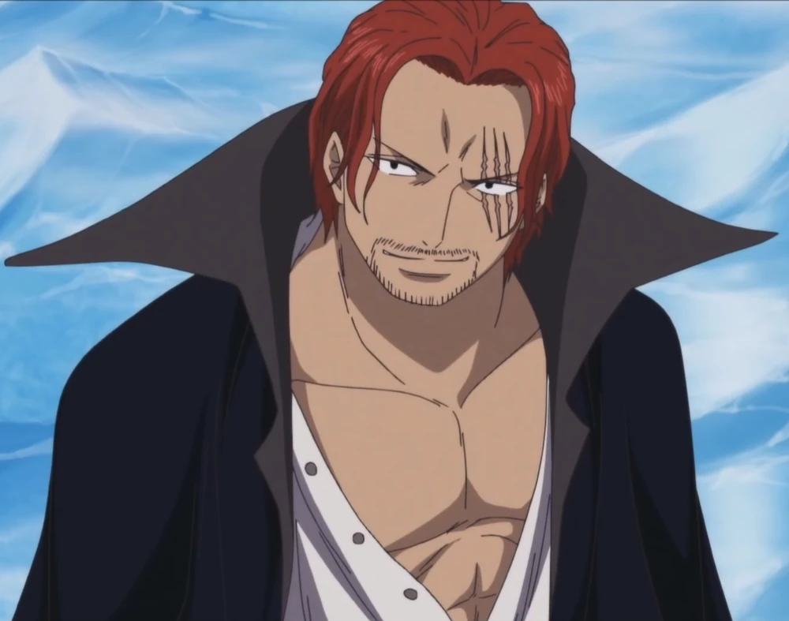
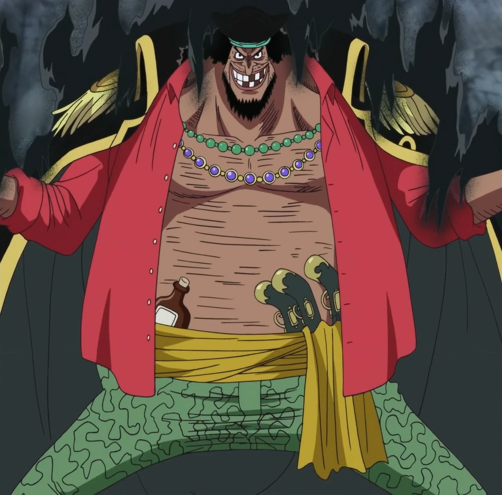
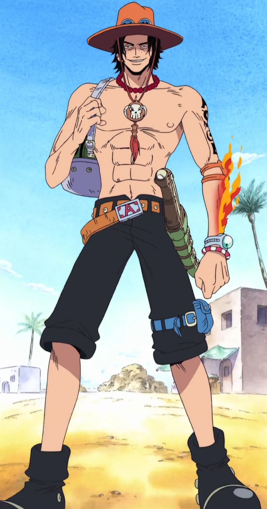
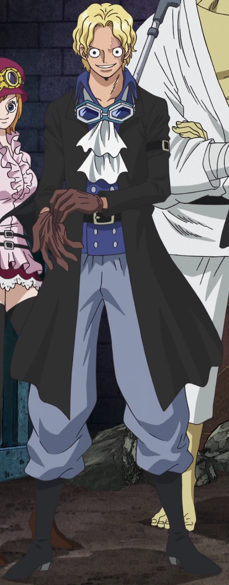
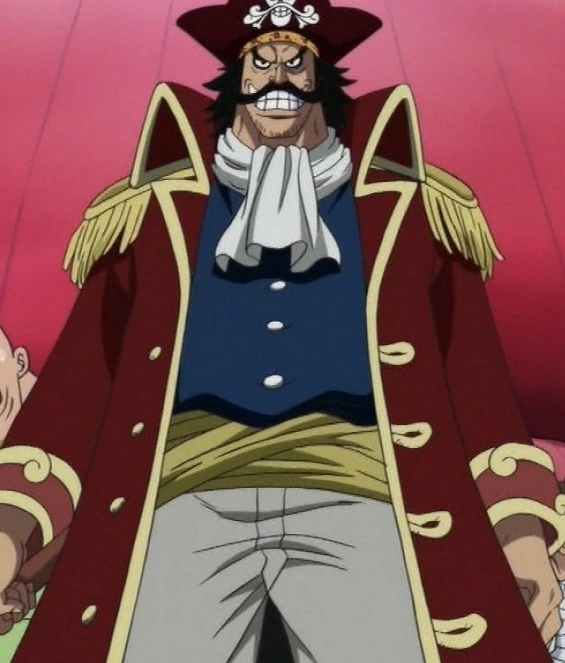

Shanks, conocido como el Pelirrojo (赤髪あかがみのシャンクス Akagami no Shankusu), es el capitán de los Piratas del Pelirrojo y uno
de los Cuatro Emperadores que gobiernan el Nuevo Mundo. Anteriormente, fue un miembro destacado de la legendaria
tripulación de Gol D. Roger, la única banda que logró conquistar con éxito todo Grand Line.
Shanks desempeña un papel significativo en la historia al inspirar a Monkey D. Luffy a seguir su sueño de convertirse en
el Rey de los Piratas. Además, fue quien encontró la fruta Gomu Gomu que Luffy comió accidentalmente. También se destaca
como el padre adoptivo de Uta.
Una de las características más distintivas de Shanks es el color rojo de su cabello, que es la base de su epíteto. En su
rostro, lleva tres cicatrices en el ojo izquierdo, las cuales fueron infligidas por Barbanegra. Además, Shanks perdió su
brazo izquierdo al salvar a Luffy de un rey marino. Es interesante notar que cada vez que se enfrenta a Teach, las
cicatrices en su rostro comienzan a arder.

Marshall D. Teach (マーシャル・D・ティーチ Mārusharu Dī Tīchi), más conocido como Barbanegra (黒ひげ Kurohige), es el almirante de los
Piratas de Barbanegra y uno de los Cuatro Emperadores que dominan los mares del Nuevo Mundo. Consolidó su estatus como
uno de los Cuatro Emperadores después de vencer en la Batalla de la Venganza contra los Piratas de Barbablanca.
Actualmente, él y su tripulación ocupan Hachinosu.
Iniciando su carrera como aprendiz pirata, Teach fue parte de la segunda división de los Piratas de Barbablanca bajo el
mando directo de Portgas D. Ace, a quien entregó a la Marina después del Duelo en la Isla Banaro para asegurar su
posición como uno de los Siete Guerreros del Mar. Además, fue el responsable de la masiva liberación de presos en el
último nivel de Impel Down. Sus acciones le valieron el reconocimiento como uno de los piratas de la "Peor Generación".
Teach actuó como antagonista menor en el arco de Jaya, en el de Impel Down, y como uno de los antagonistas principales
en el arco de Marineford, siendo el principal desencadenante de este último. Los eventos subsiguientes lo posicionan
como uno de los antagonistas principales en la serie.

Portgas D. Ace (ポートガス・D・エース Pōtogasu Dī Ēsu), también conocido como Gol D. Ace (ゴール・D・エース Gōru D. Ēsu) y apodado Ace
«Puño de Fuego» (火拳のエース Hiken no Ēsu), fue el hermano mayor jurado de Luffy y Sabo, y el hijo biológico del difunto Rey
de los Piratas, Gol D. Roger, y Portgas D. Rouge. Ace fue adoptado por Monkey D. Garp, según el deseo expresado por
Roger antes de su ejecución. Además, fue el comandante de la 2º división de los Piratas de Barbablanca y antiguo capitán
de los Piratas Spade.
Los eventos durante el arco de Impel Down y Marineford se centraron en el rescate organizado por su hermano Luffy y su
capitán Barbablanca (a quien Ace consideraba como un verdadero padre) para salvarlo de la ejecución planeada por el
Gobierno Mundial. Esta situación desencadenó una guerra feroz en la que Barbablanca y sus aliados se enfrentaron a la
Marina y los Siete Señores de la Guerra del Mar, cambiando el curso de la historia. Aunque Ace fue liberado al final de
la guerra, sacrificó su vida para proteger a Luffy del almirante de la Marina Akainu.
La muerte de Ace resultó ser el catalizador que llevó a Luffy a embarcarse en un entrenamiento de dos años para volverse
lo suficientemente fuerte como para proteger a sus amigos, marcando un importante punto de inflexión en la historia.
A pesar de que no eran consanguíneos, Ace se parecía mucho a su hermano adoptivo, Luffy. Sin embargo, Ace era mucho más
serio que el diseño alegre de Luffy, y también era un poco más alto y más musculoso. También lucía pecas que le daban un
aspecto bastante infantil y tendía a hacer una expresión de cara incrédula levantando su ceja izquierda. Curiosamente,
sus rasgos faciales eran casi similares a su padre biológico Gol D. Roger en su juventud y sin su bigote. Los tatuajes
de Ace se marcan entre sus características más notables. Tenía un tatuaje en su espalda con el símbolo de Barbablanca
(huesos púrpura formando una cruz detrás de una calavera púrpura con un bigote blanco), que él describió como su orgullo
y alegría. Ace tenía otro tatuaje en su bíceps izquierdo superior que decía "ASCE" verticalmente con la "S" tachada. La
S es muy similar a la que Sabo escribió en la carta a Ace y Luffy, y tiene un parecido sorprendente con la S en el Jolly
Roger. El hecho de que la S no aparece en el capítulo 596 en la cubierta cuando Sabo, Ace y Luffy son vistos juntos como
adultos cumple la teoría de que se trata de un homenaje a su hermano fallecido.

Sabo (サボ Sabo?), también reconocido como el Emperador de las Llamas (炎帝 Entei?),[1] ocupa el cargo de jefe de personal
del Ejército Revolucionario y ostenta la posición número 2 en la organización. Es hermano jurado de Monkey D.
Luffy y del difunto Portgas D. Ace, además de ser un antiguo noble del Reino de Goa.
En su infancia, Sabo fue dado por muerto después de que un Noble Mundial disparara a su balsa y esta fuera destruida.
Afortunadamente, fue rescatado por Monkey D. Dragon antes de ahogarse, aunque perdió la memoria, sufriendo amnesia y
olvidando todos sus recuerdos. Tras la Batalla de Marineford, Sabo recobró la memoria y se reencontró con Luffy durante
el arco de Dressrosa.
Después de los eventos del Levely, Sabo ha sido acusado del asesinato de Nefertari Cobra.
Sabo es un chico esbelto de rostro agraciado: su piel es bronceada, su color de ojos es negro. En su cara se destaca la
cicatriz del ojo izquierdo que le provocó San Jalmarck. Sus facciones faciales guardan un cierto parecido con las de
Luffy, y debido a esta semejanza, fue capaz de engañar a los espectadores del Coliseo Corrida e incluso a Diamante, y
hacerse pasar por su hermano pequeño. Su cabello es rubio y ondulado, se asemeja al de Ace[10][2] y su largura está
diseñada para tapar su cicatriz.
A pesar de haber abandonado su condición de noble, la vestimenta de Sabo recuerda claramente a la de la nobleza; viste
un chaleco azul oscuro de botones plateados sobre una camisa del mismo tono; un pañuelo blanco sobre el cuello;
pantalones anchos de un azul más claro remetidos en unas botas negras; un cinturón negro simple; guantes marrones y una
gabardina desabrochada negra con una hebilla en la manga izquierda. Además, utiliza un sombrero de copa negro con unas
gafas azules a su alrededor.

Gol D. Roger (ゴール・D・ロジャー Gōru dī Rojā?)[8], más reconocido como Gold Roger (ゴールド・ロジャー Gōrudo Rojā?),[2] fue el capitán
de los Piratas de Roger y alcanzó la fama como el Rey de los Piratas (海賊王 Kaizoku-Ō?). Este título le fue otorgado
después de conquistar todo el Grand Line y ser el primero en llegar a Laugh Tale con su tripulación en los últimos
ochocientos años, asegurándose así la posesión del legendario tesoro denominado "One Piece".
Además, Roger mantuvo una relación amorosa con Portgas D. Rouge y fue el padre biológico de Portgas D. Ace.
Roger era un hombre alto, sus rasgos físicos más destacados fueron el bigote curvo negro, con una sonrisa feroz que casi
siempre llevaba, y sus ojos intensos. Él también tenía un grueso pelo negro, así como un cuello corto y grueso.
